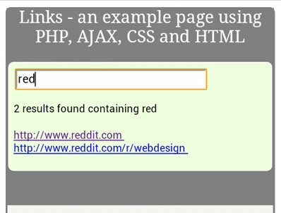

| webdesign | food | virtual | lifecube | about | links | house | gadgets |
A place to discuss gadget ideas, electronic devices, design tips
This is version 0.1 of a simple application to demonstrate how to use various elements in a web application. It shows how to:

You can see the application at
http://www.cloudeddesigns.com/demo/links/links.html
The code below is from the main HTML page. A simple form holds the area for the user to enter a search string 'txtSearch', and when a key is pressed here it calls the javascript function 'LoadListOfLinks' each time. The search results when returned will be placed into the area 'txtResults'.
<form name="searchForm" > <input name="txtSearch" type="text" onkeyup="LoadListOfLinks(this.value)" size="50" /></form><div id="mainList">Enter a search string to find links</div><!-- Search Results go below into txtResults --><p><span id="txtResults"></span></p>
The code snippet below if from the javascript function 'LoadListOfLinks'.
It sends the search string to the PHP function 'links.php' and once this completes ( readyState '4') with success (xmlhttp.status '200'), it displays the results into the area defined as 'txtResults'
document.getElementById("txtResults").innerHTML=" Please wait... Searching for URLs containing '" + str + "'" ; if (window.XMLHttpRequest) {// code for IE7+, Firefox, Chrome, Opera, Safari xmlhttp=new XMLHttpRequest(); }else {// code for IE6, IE5 xmlhttp=new ActiveXObject("Microsoft.XMLHTTP"); }xmlhttp.onreadystatechange=function() { if (xmlhttp.readyState==4 && xmlhttp.status==200) { document.getElementById("txtResults").innerHTML=xmlhttp.responseText; } }xmlhttp.open("GET","links.php?q="+str , true);xmlhttp.send();document.getElementById("mainList").innerHTML=" List of URLs containing '" + str + "'" ; }
The complete PHP code is here, but the snippet below shows the section which reads a list of URL's from a text file into an array and sends that back as a response.
// load the list of sites from a text file $file_handle = fopen("links.txt", "rb");while (!feof($file_handle) ) { $a[] = fgets($file_handle);}fclose($file_handle);//get the q parameter from URL$q=$_GET["q"];$totRecs = 0;op("links.php - searching for '".$q."'", $testing ); //lookup all urls from array if (strlen($q) > 0) { $hint=""; for($i=0; $i<count($a); $i++) { if (strpos($a[$i],$q) > 0 ) { $hint = $hint."<BR>".fixURL( $a[$i] , True ) ; $totRecs = $totRecs + 1; } } }if ($hint == "") { $response="no matches on ".$q; }else { $hint = $totRecs." results found containing ".$q."<BR>".$hint."<BR>" ; $response=$hint; }echo $response;?>
The basic display of this application is handled by the cascading style sheet
links.css. When viewed on a normal PC the following source snippets show how the display is shown
/*'---------------------------links.css - for normal screens-----------------------------*/#body { font-family: tahoma, sans-serif; margin: 0px auto; padding: 0px auto; font-size: 12px; color: #111; background-color: grey;}#container { background-color: grey; margin: 0px auto; padding: 0px auto; text-align:left;border-radius: 6px; -moz-border-radius:6px; -webkit-border-radius: 6px; border: 14px solid grey;}#header { font-family: Goudy Old Style, serif; font-size: 250%; color: white; text-align: center; height: 100px; background-color: grey; }#content { padding: 15px 15px 15px 15px ; margin: 10px 20px 10px 20px; background-color: white;border-radius: 6px; -moz-border-radius:6px; -webkit-border-radius: 6px; border: 1px solid #fff;font-size: 12px; font-family: tahoma, sans-serif; }#code { align: left; margin: 0px 25px 25px 25px; padding: 5px 25px 25px 25px ; border: 2px; font-size: 14px; background-color: #F5F5F0; }#code h4 { -webkit-margin-before: 1.0em; -webkit-margin-after: 1.0em; background-color: black; color: yellow; }#mainList { border: 0px solid #ccd; width: 400px; }#footer { font-size: smaller; color: grey; background-color: white; text-align:center;}
Looking at the code in the header of the HTML file, there are 3 lines that will switch to an alternate CSS file as shown below
<!DOCTYPE html><html><HEAD><title>Links - an example page using PHP, AJAX, CSS</title><!-- Stylesheets for responsive design --><meta name="viewport" content="width=device-width, initial-scale=1.0" /><link rel="stylesheet" type="text/css" href="links.css" media="screen" /> <link rel="stylesheet" href="links-mob.css" media="only screen and (min-device-width : 320px) and (max-device-width : 480px)"><!-- Javascript functions --><script src="./links.js"></script>
When the user is running this page on a smartphone, the alternate CSS file will be shown, which differs as follows:
/*'----------------------------------links-mob.css - demo CSS for MobilesKey differences are: smaller margins and padding in Content, different background color (to show the correct CSS is loading)and a smaller font heading.-------------------------------------*/#body { font-family: tahoma, sans-serif; margin: 0px auto; padding: 0px auto; font-size: 12px; color: #111; background-color: grey;}#container { background-color: grey; margin: 0px auto; padding: 0px auto; text-align:left;border-radius: 6px; -moz-border-radius:6px; -webkit-border-radius: 6px; border: 14px solid grey;}#header { font-family: Goudy Old Style, serif; font-size: 150%; color: white; text-align: center; height: 70px; background-color: grey; }#content { padding: 5px 5px 5px 5px ; margin: 1px 2px 1px 2px; background-color: #EDFFDD;border-radius: 6px; -moz-border-radius:6px; -webkit-border-radius: 6px; border: 1px solid #fff;font-size: 12px; font-family: tahoma, sans-serif; }#code { align: left; margin: 0px 5px 5px 5px; padding: 5px 5px 5px 5px ; background-color: #F5F5F0; border: 2px; font-family: courier; font-size: 9px; }#code h4 { -webkit-margin-before: 1.0em; -webkit-margin-after: 1.0em; background-color: black; color: yellow; }
The above sample code shows how you can integrate the key elements together without having to embed PHP code or Javascript inside HTML files, which certainly works, but quickly gets messy.
The screenshot to the right shows the application running on a Samgsung Galaxt SII smartphone (the background color in the links-mob.css was changed to pale green to show the same app running different CSS files based on the media width).
Future articles planned will look at managing databases and tips for managing code, without resorting to a complete framework.
If you have any questions or comments, please email Duncan
Other code and content and commentary prepared by Acute Software